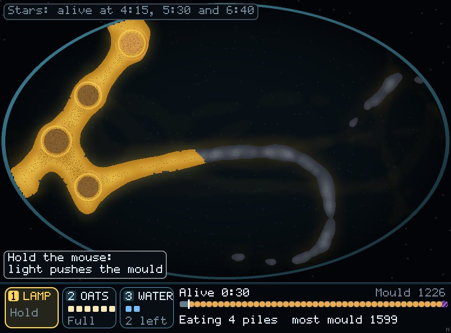
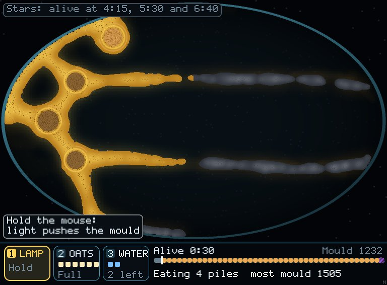
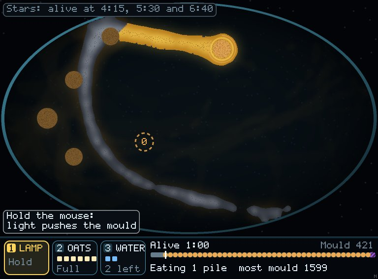
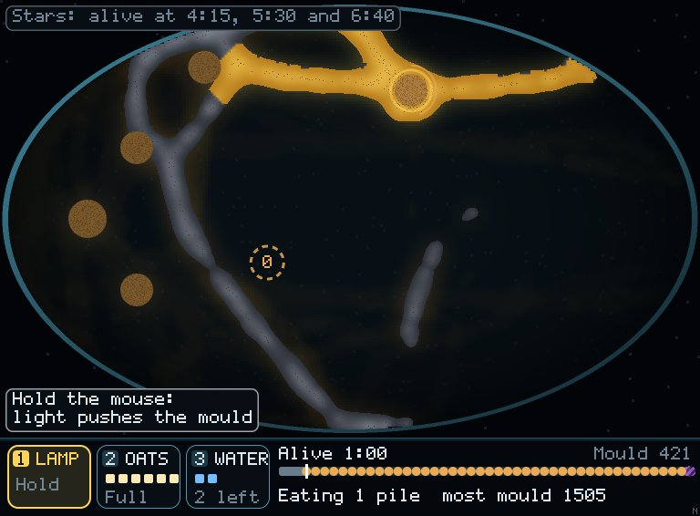
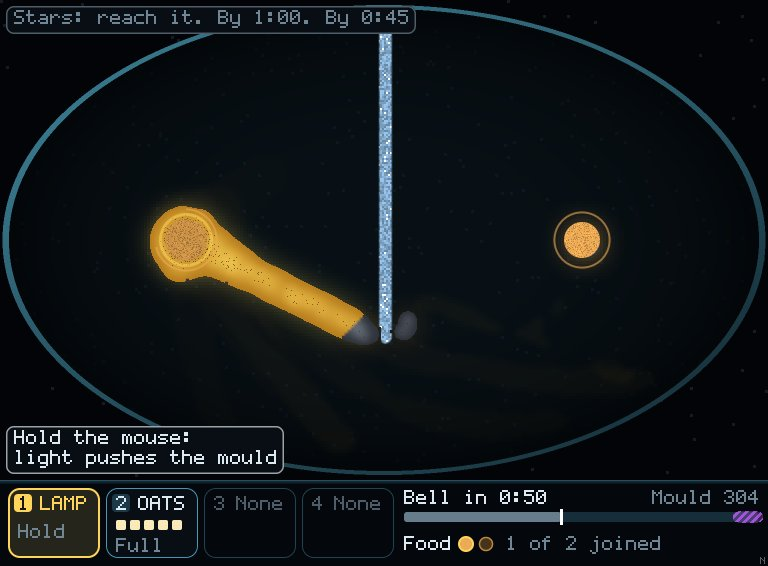
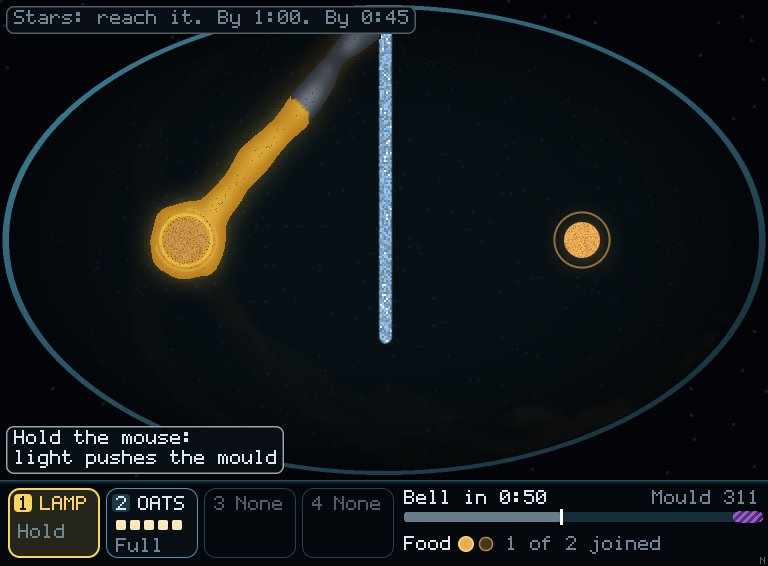

Mould · finer tubes · 10 Nov 2026
The review suggested finer tubes by shortening how far ahead each walker feels (its sensor reach, 9 cells today). I tried 6, 7 and 8 on all five dishes. The tubes do get a bit thinner and branch more. But the mould also senses food and oats from less far away, so it spreads more slowly and the oat trails that solve each dish stop working. I recommend keeping reach 9 and making tubes look thinner in how they're drawn instead.
Same seed, same moment, nobody playing. Left is today, right is reach 6.
Keep It Alive · doing nothing · 30 s


Keep It Alive · doing nothing · 60 s


Behind the Wall · doing nothing · 40 s


Keep It Alive seed 2, doing nothing: lived 2:27 at reach 9, 2:30 at reach 6. Behind the Wall seed 2, doing nothing: came within 56 cells at reach 9, 92 at reach 6. Neither reached the food.
Stars per seed for the scripted hand that solves each dish. Doing nothing stays at 0 everywhere, at every reach.
| Dish, planned hand | Reach 9 (today) | 8 | 7 | 6 |
|---|---|---|---|---|
| Behind the Wall | 33333333 | 33333333 | 13333323 | 20031231 |
| Beat the Ruler | 33333333 | 30330300 | 00000000 | 00000000 |
| Running Dry | 33333333 | 33333333 | 33333333 | 33333033 |
| Dish, best hand | Reach 9 (today) | Reach 6 |
|---|---|---|
| Keep It Alive, lamp + oats + water (lived) | 4:11–10:42, median 6:21 | 3:04–12:02, median 3:41; shorter on 6 of 8 seeds |
| The Wild One, all four tools (your share) | 0.67–1.00; it died on 3 seeds | 0.49–0.63; it took more on 2 seeds |
Beat the Ruler fails because the third pile is never joined in time: "2 of 3 foods joined at the bell" on every failed seed at reach 7. The Wild One at reach 6: the tool hand went from 3 stars on 3 seeds and 2 on 4 to mostly 0.
Every dish could be retuned for reach 6 (oats closer together, more oats, piles nearer), but that's all five dishes' stars redone, and the mould would be a slower, nearer-sighted creature to play with.
Keep reach 9. Get the finer look from how the tube is drawn instead, a job for the looks thread. Reach is still in the T tuning panel if you want to feel the difference in the window.